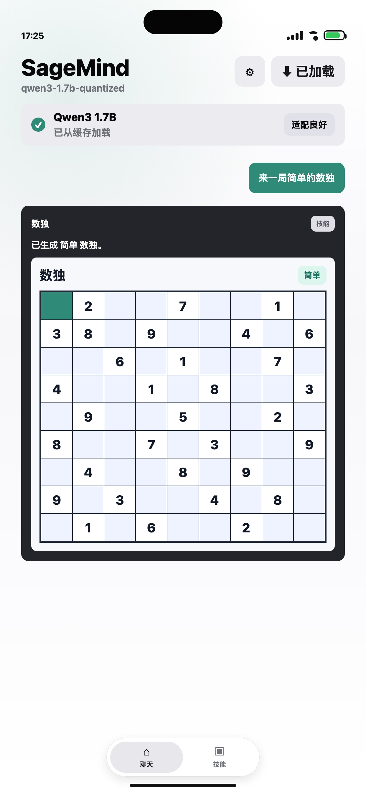
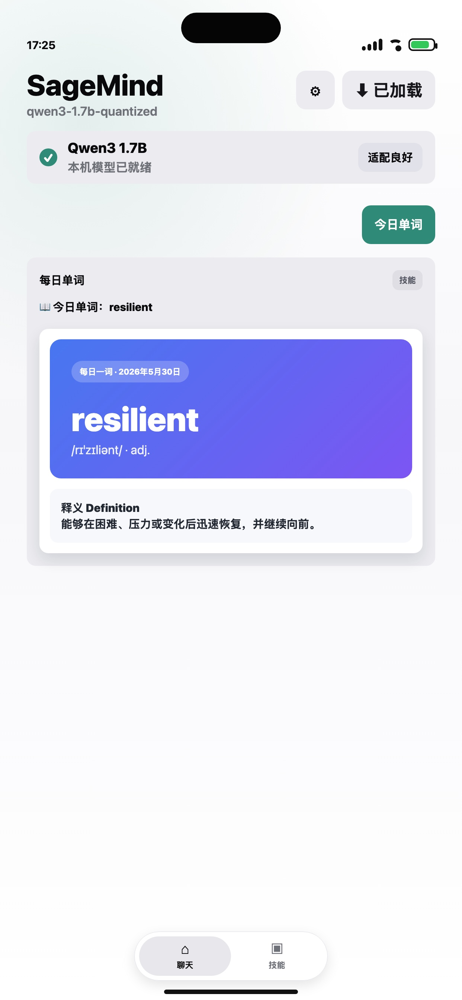

本机聊天
加载轻量模型后，即可在手机上进行自然对话，适合随手提问和整理想法。
SageMind 面向想要轻量 AI 助手、英语学习卡片、情绪记录、数独练习和本机技能工具的用户。它不把入口做复杂，把常见的小任务整理成可以反复使用的卡片。
Sage Skills
加载轻量模型后，即可在手机上进行自然对话，适合随手提问和整理想法。
生成英文单词卡片，包含音标、释义、例句和收藏，适合碎片时间学习。
支持简单、中等、困难、地狱四种难度，生成宫格并在 WebView 中交互解题。
用一句话记录当天状态，让情绪变化更容易被看见和回顾。
Screenshots


Designed for everyday use
Support
可以在 GitHub 上提交问题、建议或截图反馈。SageMind 会继续围绕本机 AI、Sage Skills 和移动端体验迭代。
提交反馈